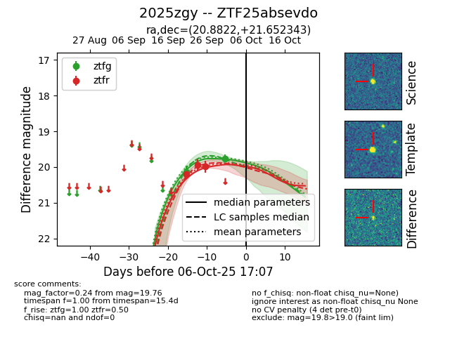
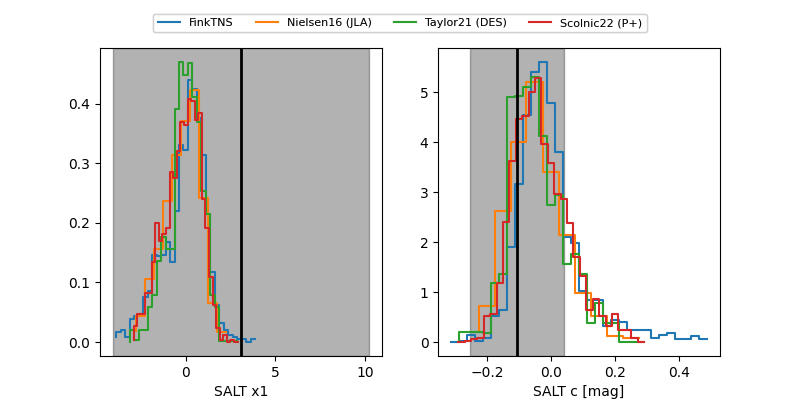

FINK: ZTF25absevdo
Lasair: ZTF25absevdo
ALeRCE: ZTF25absevdo
TNS: 2025zgy
YSE: 2025zgy
ZTF25absevdo (ztf,fink)
2025zgy (tns,yse)
equatorial (ra, dec) = (20.8822,+21.65234)
galactic (l, b) = (132.7697,-40.60560)


last ztfg=19.76, ztfr=19.99
2 ztfg, 3 ztfr detections